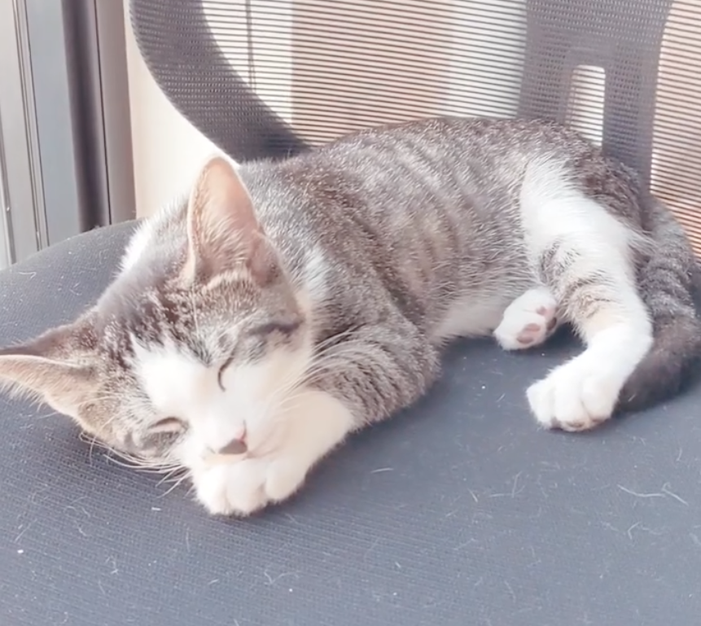

This page is about random things I like. I hope you enjoy it!
Favorite dog
This is an image of a pittie, I would like to adopt one in 2 years!
Favorite cat
This is my cat Neo. He is a pandemic baby. Neo has been in charge of the household for 2.5years.
Favorite quote
There is nothing in the world more soft and weak than water, and yet for attacking things that are firm and strong there is nothing that can take precedence of it;—for there is nothing (so effectual) for which it can be changed
Favorite music
Lastly, please check out the song du jour. Thank you for visiting this page!